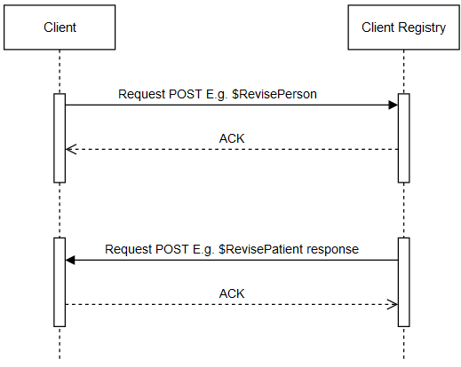

BC Client Registry FHIR Implementation Guide
1.0.0 - Build CI

BC Client Registry FHIR Implementation Guide
1.0.0 - Build CI

BC Client Registry FHIR Implementation Guide - Local Development build (v1.0.0). See the Directory of published versions
Note
This specification is currently published as a Draft Standard on the ministry GitHub and is not intended for implementation. Feedback is welcome but readers should understand that there is more work to be done in testing the profiles and operations defined in this guide. For more information, please see the Future Plans page in this guide.
An add is defined as an event where at least the minimum Client Registry data elements are gathered for the first time, validated using trusted identification provided by the client and a new PHN and client record is created.
A revise is defined as an event where at least the minimum Client Registry data elements of an existing client with a PHN are verified using trusted identification provided by the client and updated.
The Client Registry treats the incoming Revise Patient as a complete snapshot of the source record. If the point of service application sends a blank attribute to the Client Registry, that attribute in the source’s record in the Client Registry will be terminated.
To prevent the termination of certain attributes in the composite view, the point of service application must first query the Client Registry and resend in a Revised Person message any attributes that were returned on the query that are not maintained in the local system.
The Merge Patient transaction is used to merge duplicate records in the Client Registry.
If the records are merged on the point of service application, a ‘Merged Patient’ message must be automatically generated to the Client Registry.
If the demographics are updated at the same time as the merge, the demographic update will be processed as a second ‘Revised Patient’ interaction was requested and will update the demographics once the merge is complete.
The patient record the point of service is keeping must be in the Client Registry prior to the merge or the Merge Person message will fail. This record is known as the ‘survivor’ record.
The FHIR structure is roughly the same for Add, Merge, Revise and Distributions. RelatedPerson is only required to AddPatient newborns. Responses (if required) are wrapped in collection Bundles and include OperationOutcome, Operation Parameters, possible RelatedPerson resources and Patient resources.

The asynchronous pattern for Revise and Merge Patient follow the same pattern as V3. The figure below shows a client requesting an operation from the Client Registry and the Client Registry responding, later, with the response.

The request/responses are associated by the unique message id in the Parameters resource. The client must create a FHIR Operation end point to receive the responses at a later time. Specifically the response will be a Bundle, as documented in the RevisePatient and MergePatient operations. The response contains the IN parameters requestMessageId to link the messageId in the request to the asynchronous response.
This is a special Operation that allows a user to selectively update a Patient record. It has the same FHIR structure as Revise Patient except the Patient resource can be minimally populated. Besides an Identifier the user is able to selectively update Patient attributes. This Operation should be used when the user doesn’t have the full Patient record available. See the Update Operation.